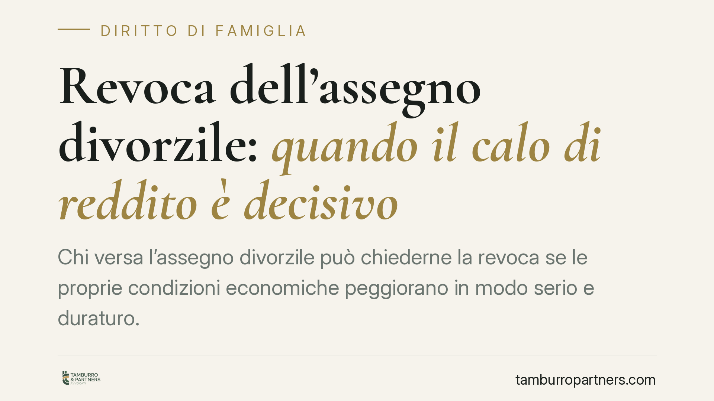

Revoca dell'assegno divorzile: quando il calo di reddito è decisivo
Chi versa l'assegno divorzile può chiederne la revoca se le proprie condizioni economiche peggiorano in modo serio e duraturo. Una recente pronuncia del Tribunale di Foggia ricorda però che non basta un calo momentaneo: occorrono fatti nuovi, stabili e significativi rispetto alla decisione originaria. Ecco cosa cambia per obbligato e beneficiario e come impostare la richiesta.

Il caso
Un ex coniuge obbligato al versamento dell'assegno divorzile chiede al giudice di revocarlo, allegando un peggioramento consistente della propria situazione reddituale. Il Tribunale di Foggia, con una recente pronuncia, accoglie la domanda, ma solo dopo aver verificato che il mutamento fosse effettivo, consolidato e tale da alterare l'equilibrio economico stabilito in sede di divorzio.
La decisione è utile perché ribadisce un principio spesso frainteso: il giudizio di revisione non è un secondo processo per rimettere in discussione ciò che è già stato deciso, ma uno strumento per adeguare l'assegno a circostanze davvero nuove.
Inquadramento normativo
Sul piano sostanziale, l'assegno divorzile trova fondamento nell'art. 5, comma 6, della Legge n. 898/1970, che ne àncora il riconoscimento alle condizioni economiche degli ex coniugi e alla funzione, oltre che assistenziale, anche compensativa e perequativa affermata dalla giurisprudenza di legittimità.
Sul piano processuale, la revisione delle condizioni economiche è oggi disciplinata dall'art. 473-bis.29 c.p.c., introdotto dalla riforma Cartabia. La norma consente di chiedere la modifica o la revoca dell'assegno quando sopravvengano giustificati motivi, cioè fatti nuovi rispetto alla situazione cristallizzata nel provvedimento originario.
Da qui la regola richiamata dal Tribunale: il fatto nuovo deve essere sopravvenuto (verificatosi dopo la decisione), stabile (non un evento passeggero) e significativo (idoneo a incidere sull'assetto economico definito in precedenza). Se manca anche uno solo di questi requisiti, la domanda non può essere accolta.
Il rapporto con il giudicato
Il punto centrale è il rapporto con la decisione già passata in giudicato. L'assegno stabilito in sede di divorzio fotografa una situazione determinata in un dato momento. La revisione non serve a correggere presunti errori di quella valutazione, né a riproporre argomenti già respinti: serve solo a prendere atto di ciò che è cambiato dopo.
Un calo di reddito temporaneo, una spesa straordinaria isolata o una difficoltà transitoria non bastano. Occorre invece un peggioramento durevole e documentato — ad esempio la perdita del lavoro con difficoltà oggettive di ricollocazione, un mutamento strutturale dell'attività o l'insorgere di oneri stabili.
Effetti temporali
Quanto alla decorrenza, secondo l'orientamento prevalente la modifica o la revoca dell'assegno opera dalla data della domanda giudiziale, e non dalla successiva sentenza. Si tratta però di un profilo non del tutto pacifico: la decorrenza va sempre valutata in concreto, in relazione alla natura dei fatti dedotti e al momento in cui il mutamento si è consolidato.
Implicazioni pratiche
Per l'obbligato, la sentenza conferma che un peggioramento reddituale serio può giustificare la revoca, ma impone un onere probatorio rigoroso: non basta affermare la difficoltà, va dimostrata con documenti che ne provino stabilità ed entità.
Per il beneficiario, il messaggio è opposto: la revoca non è automatica. Un calo modesto o passeggero della controparte non fa venir meno il diritto, e chi riceve l'assegno può contestare la reale portata del mutamento allegato.
Cosa fare in concreto
- Documentate il mutamento. Raccogliete dichiarazioni dei redditi, buste paga, comunicazioni di cessazione del rapporto, estratti contabili: la prova scritta e continuativa è decisiva.
- Verificate la stabilità. Prima di agire, accertate che il peggioramento non sia transitorio; una difficoltà momentanea difficilmente supera il vaglio del giudice.
- Confrontate con la situazione originaria. Ricostruite le condizioni economiche esistenti al momento del divorzio, perché la novità si misura sempre rispetto a quel quadro.
- Valutate la decorrenza. Ricordate che, in via prevalente, gli effetti risalgono alla domanda: un deposito tempestivo può incidere sull'importo complessivo.
- Preparate una difesa mirata (beneficiario). Se ricevete una domanda di revoca, contestate l'effettiva stabilità e rilevanza del mutamento allegato, con prove contrarie.
Consigliamo di attivarsi solo quando il mutamento economico è effettivamente consolidato e documentabile, evitando iniziative premature che rischiano di essere respinte. La linea tra fatto nuovo rilevante e semplice fluttuazione è sottile, e va valutata caso per caso alla luce degli elementi realmente incidenti sull'assetto economico.
---
Contributo informativo a cura di Tamburro & Partners Avvocati - Avv. Giuseppe Tamburro. Non costituisce parere legale.
Ogni famiglia ha il suo equilibrio.
Separazione, divorzio, affidamento, assegno: se vuoi un confronto riservato su una specifica situazione, scrivi allo studio. Ti rispondiamo entro un giorno lavorativo.